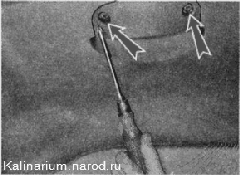
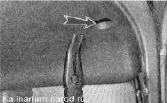
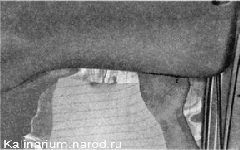
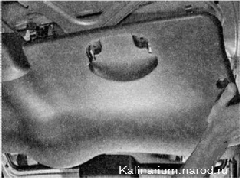

Обивка двери багажного отделения снятие и установкаПри снятии обивки велика вероятность повреждения держателей. Поэтому рекомендуется приобрести запасные держатели (4 шт., смотрите «Обивка двери — снятие и установка»). Снятие 1. Подготавливаем автомобиль к выполнению работы. 2. Крестовой отверткой отворачиваем два винта крепления внутренней ручки двери и снимаем ручку с двери. 
3. Плоскогубцами с узкими губками извлекаем два держателя обивки двери.  4. Оттягиваем верхний край обивки от двери, преодолевая сопротивление держателей... 
...и, сдвинув обивку к стеклу, снимаем ее с двери. 
Установка Устанавливаем обивку в обратной последовательности, заменив поврежденные держатели. |